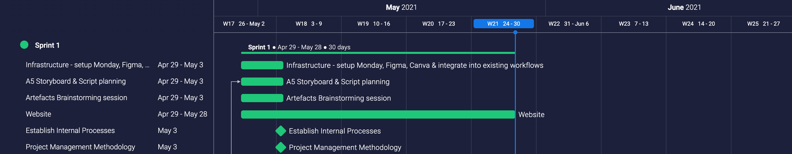
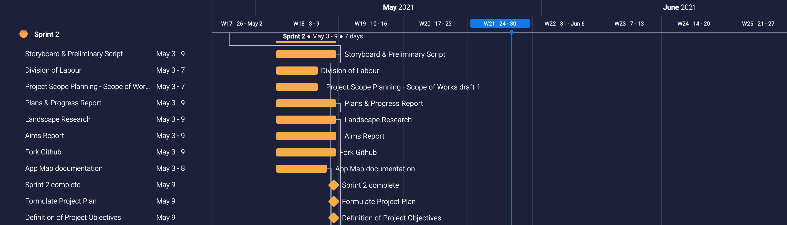
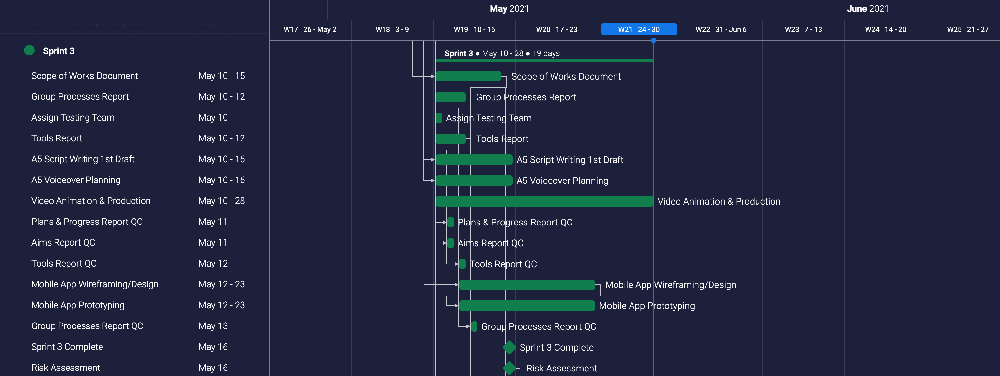
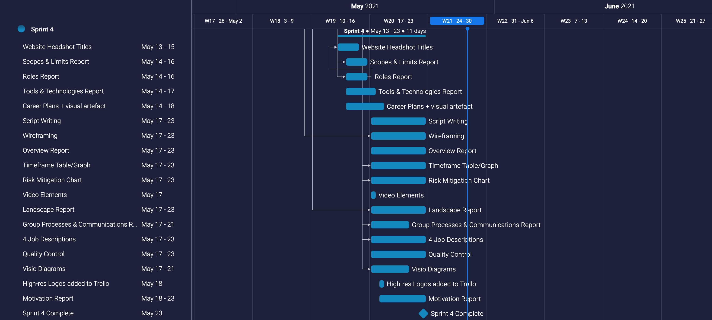
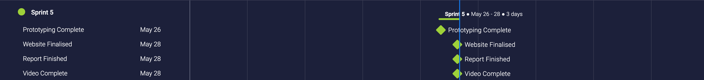

Artefacts —
Cognisant of the manifold risk’s concomitant to any project, UMI prioritised in-depth scoping to inform the planning and execution of works to be completed. A multi-phased approach was adopted to ensure reasonable deliverables with achievable lead times.
This Project Scope of Work document provided a centralised plan containing a clear delineation of tasks, communication schedules, escalation plans, identified stakeholders, strategies and objectives, and referenced related documents in a manner that would comprehensively inform new and existing participants in the project development, including newly onboarded staff and investors.
To view the Project Scope of Work, please click here.
The below outlines potential risks identified that could have a negative impact on the Project’s success if not adequately prepared for. The Project Manager and the Project Team are responsible for developing the appropriate contingency plans to mitigate these risks should they occur, with reference to the document–UMI-Scope-of-Works.doc
-
Security Risks
- User information leak
- Financial information leak
- Malicious attack
-
Timeframe
- Unforeseen setbacks causing delays in task completion
- Changes to deadlines or allotted timeframe
- Miscalculations in Gantt plotting
- Scope creep
-
Budget
- Over-expenditure of working capital
- Budget not adequately allocated across tasks
-
High Customer Demand
- Too many users accessing the application during launch causing system overload
-
Human Resources Issues
- Poor team management
- Inadequate or improper training; insufficient resources and tools provided to employees
- Lack of cross-department communication
| Risk | Likelihood (1-5) | Consequence | Risk Rating | Action |
|---|---|---|---|---|
| Security | 3 | Critical | High | Identify and encrypt sensitive data, use endpoint security measures, employ security personnel. |
| Timeframe | 4 | Moderate | High | Strict Project Management parameters, set realistic deadlines, track thoroughly, use time estimation formula. |
| Budget | 3 | Moderate | Medium | Regular budget planning & reporting, MD approval required for large expenditures, hire financial advisor. |
| Demand | 1 | Marginal | Low | Formulate pre-launch strategy that allows early adoption for restaurants, use an auto-scaling system. |
| HR | 2 | Marginal | Low | Hire eternal HR company, map and document internal SOPs and escalation plan, regular open communication. |


[section 1] With todays diverse and multicultural society, as well as ease of access to travel, language barriers can be one of the hardest things to overcome. This can be especially prevalent when trying to order or purchase something from a restaurant or other hospitality business(es) in a foreign country. That’s why we created UMI.
[section 2] UMI utilises smart devices and NFC technology to help streamline the translation process and eliminate the need for cumbersome verbal interpretation.
[section 3] We all have our reasons to travel, and we all share the same need to eat! We hope to break down the barriers and eliminate the sometimes nerve-wracking or anxiety inducing process of trying to purchase food in a foreign language. Wouldn’t you rather have a simple, easy way to communicate, rather than trying to play a bad game of charades, or butchering the local language to the point of not being understood. That is where UMI comes to save the day. We utilise state of the art technology to take care of the process for you. NFC or Near Field Communication is used to instantly send the restaurant’s information to a customer's smart device, while Neural Machine Translation analyses the text to be translated and automatically sends it to the customer in their preferred language.
[Section 4] It starts by having a business sign up for an UMI account. When a business signs up they will be taken to a merchant specific page for their place of business. From here, they can upload menu images and descriptions, view previous orders made through UMI, manage their billing details, and more. Once a menu item has been uploaded, it will be automatically stored in our database, ready for a customer to view in their preferred language. From there, all that is needed is a small NFC device readily accessible for customers to tap their smart device on.
[section 5] For a customer to then make orders through UMI, they would download our UMI app from the application store, register for an account and login. Once they are an UMI member, they can select their preferred language to receive information in. Using this information, when accessing the menu of an UMI enabled business, our server will retrieve the data, and automatically translate it into the desired language using a worldwide language database. All the customer will need to do is tap their smart device to the business’ NFC device and voila, an instantly translated menu. From there, they select what they’d like to order, pay through the app, and their order is delivered to the business in their preferred language ready to satisfy their taste buds.

[Section 6] You might be thinking “this is just another translation app”; but what sets us apart is our love for creating and connecting ties between people, over great food. We accomplish this through enticing those who view foreign language as a barrier; by streamlining the translation process. Rather than having to enter menu items one by one into a translator, or try to take a photo with a visual translator; UMI is an all-in-one solution, providing an automatically translated menu, order portal, and an online payment gateway.
[Section 7] It’s not all about those who travel. UMI can also be used to help those who might move to a different country, but don’t yet know the language. With UMI, they would be able to go out and enjoy dining experiences in their new home, or even start a business themselves, with the ability to connect with the locals.
[Section 8] Here at UMI, we believe that linguistic rights are human rights, that’s why we created this application with accessibility to the mainstream consumer experiences at its core, and to advocate for a shift in cultural relatability through the experience of food and dining. UMI aims to create and connect the ties between human experiences, both familiar and unfamiliar once again.
[Section 9] So come check out UMI, and unlock an easy way to experience a diverse world of food and dining experiences.




